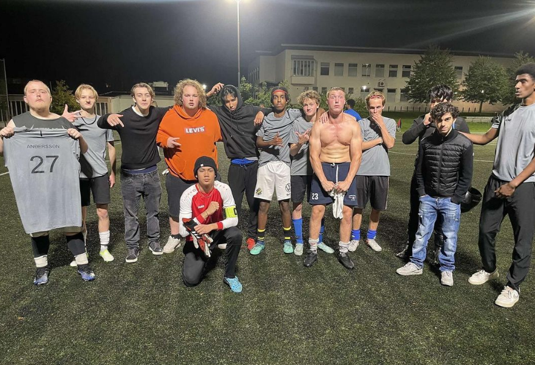

BG SPARTANS OFFICIAL SITE

BG SPARTANS
INSTAGRAM
YOUTUBE
HIGHLIGHTS: 2-1 VINST MOT URBAN WANDERERS
HIGHLIGHTS: 3-2 VINST MOT LIDINGÖ LOSERS
Poäng:
Namn:
Bayasgalan "Nick" Bazarsuren:
9 mål, 6 assist
Nadera Gibul:
6 mål, 7 assist
Feroz Alizada:
3 mål, 2 assist
Mohamad Al-aani och Szymon Fedan:
3 mål, 1 assist
The King:
3 mål